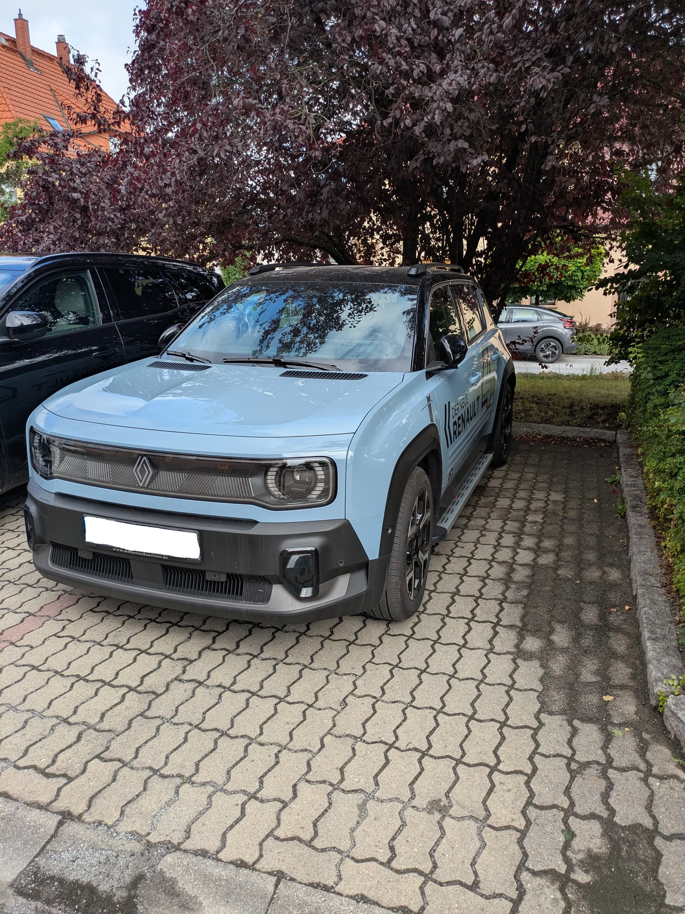
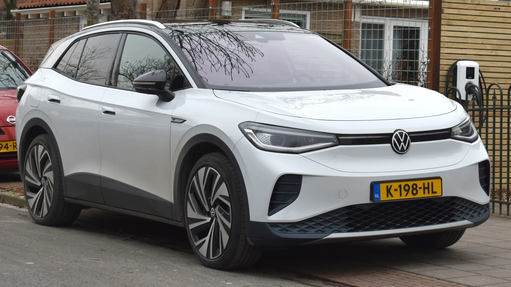
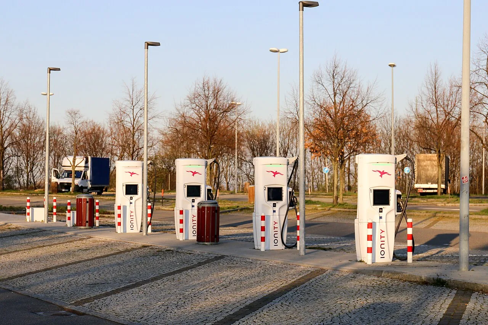
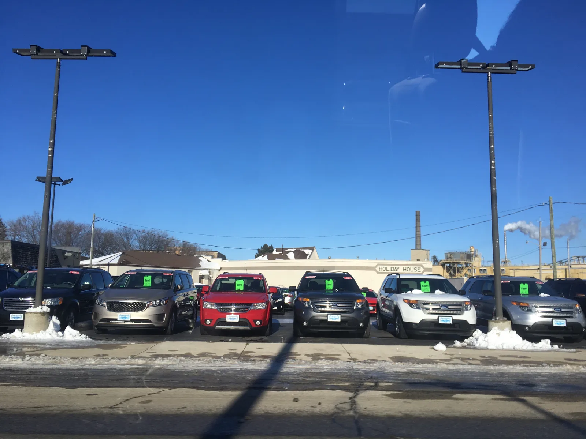

▲ 유럽 전기차 시장은 8월에만 전년 대비 36% 성장했다 (사진=Wikimedia Commons)
1. 유럽 — 8월에만 36% 늘었다, 여름 비수기인데도
미국 전기차 전문매체 Electrek이 9월 10일(현지시간) 보도한 "EV sales are booming in Europe – and plunging in North America" 기사에 따르면, 유럽의 8월 전기차 판매는 약 38만 대로 전년 동월 대비 36% 증가했습니다. 7월보다는 15% 줄었지만, 이는 유럽 자동차 시장 전체가 휴가철에 위축되는 계절적 요인일 뿐입니다.
더 눈에 띄는 건 누적치입니다. 2026년 1~8월 유럽 전기차 판매는 330만 대로 전년 대비 29% 늘었습니다. 한여름 비수기에도 두 자릿수 성장세가 꺾이지 않았다는 뜻입니다.
프랑스는 8월 기준 사상 최고인 41%의 전기차 시장점유율을 기록했습니다. 스페인은 자국의 'Auto+' 인센티브 프로그램(총 예산 4억 유로 규모, 차량 1대당 최대 4,500유로 기본 보조금 지원, 1월 1일 소급 적용)을 앞세워 성장을 이어갔습니다. 앞서 저희가 다룬 7월 통계에서도 유럽 16개국 순수전기차 등록이 22만 대를 넘어섰는데, 8월 수치는 그 흐름이 여름을 지나서도 꺾이지 않았음을 보여줍니다.

▲ 네덜란드 주택가에 주차된 폭스바겐 ID.4. 집 앞 충전 인프라까지 촘촘히 깔린 유럽에서는 전기차가 이미 일상 풍경이 됐다 (사진=Wikimedia Commons)
| 지표 | 수치 | 전년 대비 |
|---|---|---|
| 8월 판매량 | 약 38만 대 | +36% |
| 1~8월 누적 판매량 | 330만 대 | +29% |
| 프랑스 8월 점유율 | 41% (역대 최고) | - |
| 7월 대비 증감 | -15% | 계절적 비수기 |

▲ 유럽은 고속도로 휴게소마다 급속충전 인프라를 늘리며 전기차 전환을 뒷받침하고 있다 (사진=Wikimedia Commons)
2. 북미 — 같은 8월, 33% 줄었다
정반대 방향으로 가는 시장이 있습니다. 같은 8월, 북미(미국·캐나다) 전기차 판매는 약 14만 대로 전년 대비 33% 감소했습니다. 1~8월 누적으로는 100만 대, 전년 대비 21% 줄었습니다.
앞서 저희가 정리했던 미국 세액공제 종료 1년 결과 기사에서 BEV 점유율이 12%에서 6%로 반토막 났다고 전했는데, 이번 Electrek 보도는 그 흐름이 여름을 지나서도 이어지고 있다는 최신 확인입니다. 다만 7월 대비로는 5% 증가해, 바닥을 다지는 모습도 함께 보였습니다.
업체별로 보면 GM은 2026년 들어 5만6,679대를 팔아 미국 2위 전기차 브랜드 자리를 지켰지만, 이는 전년 대비 2만7,477대(32.6%) 줄어든 수치입니다. 테슬라도 미국 판매의 절반가량을 차지하며 1위를 유지했지만, 상반기 24만2,100대로 전년 대비 10.9% 감소했습니다.

▲ 미국 중서부의 한 자동차 딜러십 주차장. 세액공제가 사라진 뒤 완성차 업체들은 전기차 재고 소진에 애를 먹고 있다 (사진=Wikimedia Commons)
| 지표 | 수치 | 전년 대비 |
|---|---|---|
| 8월 판매량 | 약 14만 대 | -33% |
| 1~8월 누적 판매량 | 100만 대 | -21% |
| GM 2026년 판매 | 5만6,679대 | -32.6% |
| 테슬라 상반기 판매 | 24만2,100대 | -10.9% |
3. 원인 — 보조금을 늘린 유럽, 세액공제를 없앤 미국
두 시장을 가른 결정적 변수는 정책입니다. 유럽은 국가별로 전기차 구매 보조금을 유지·확대하는 추세입니다. 스페인의 'Auto+' 프로그램처럼 신규 인센티브가 계속 도입되고 있고, 여기에 가격 경쟁력을 갖춘 신규 모델 출시와 높은 휘발유 가격이 더해지면서 전기차의 총소유비용 매력이 커지고 있습니다.
미국은 정반대 방향을 택했습니다. 2025년 9월 30일, 연방 전기차 세액공제 7,500달러가 폐지됐습니다. Electrek은 이번 보도에서 2025년 8~9월 세액공제 종료를 앞두고 수요가 앞당겨진 '기저 효과'까지 겹치면서, 2026년의 감소폭이 실제 수요 위축보다 더 커 보이는 효과도 있다고 짚었습니다. 여기에 신규 전기차 모델 출시 취소, 수입 모델 공급 부족 등 완성차 업체들의 방어적 대응이 맞물렸습니다.
캐나다도 사정이 다르지 않습니다. 중국산 전기차에 대한 저관세 쿼터(2만4,500대)의 64%(1만5,603대)가 이미 소진되면서, 저가 중국산 모델을 통한 가격 방어 카드도 힘을 잃고 있습니다.
결국 같은 기술이라도 보조금이 붙는 곳에서는 팔리고, 세액공제가 빠진 곳에서는 안 팔리는 단순한 공식이 대서양을 사이에 두고 그대로 증명된 셈입니다.

▲ 세액공제가 사라진 미국에서는 한산해진 충전소 풍경이 낯설지 않다 (사진=Tesla)
4. 완성차 업체별 온도차
유럽에서는 폭스바겐그룹이 전기차 세그먼트에서 약 26% 점유율로 선두를 지키고 있고, 르노는 소형 전기차 라인업(5 E-테크, 4 E-테크, 트윙고)으로 존재감을 키우고 있습니다. 특히 르노 5 E-테크는 1~7월 누적 등록 3위에 오르며 판매가 전년 대비 49% 늘었습니다. 테슬라 모델 Y도 유럽에서 11만5,759대(+55%)로 여전히 베스트셀러 자리를 지켰습니다.
반면 미국에서는 방어적 움직임이 두드러집니다. 포드는 전기 픽업트럭 F-150 라이트닝을 사실상 단종 수순에 올렸고, 다른 완성차 업체들도 예정된 신규 전기차 출시를 줄줄이 미루거나 취소했습니다. 같은 회사, 같은 차급이라도 어느 시장에 내놓느냐에 따라 완전히 다른 전략을 짜야 하는 상황이 된 겁니다.
테슬라는 두 시장 모두에서 버티고 있다는 점이 특이합니다. 유럽에서는 성장률을 견인하고, 미국에서는 감소장 속에서도 절반에 가까운 점유율을 지켜내고 있습니다. 브랜드 파워와 자체 충전 인프라가 정책 변수와 무관하게 작동하는 완충재 역할을 하고 있다는 해석이 나옵니다.
5. 한국에 주는 시사점
한국은 2027년 전기차 보조금 개편을 앞두고 있습니다. 8,000만~8,500만 원 구간 차량에 대한 보조금이 아예 사라지는 안이 논의 중입니다. 이번 유럽·북미 비교는 그 결정이 갖는 무게를 다시 확인시켜줍니다.
유럽 사례는 보조금을 유지·확대하면 비수기에도 성장세가 꺾이지 않는다는 걸 보여줍니다. 반대로 미국 사례는 보조금이 사라진 순간부터 1년 넘게 점유율이 회복되지 못하고 있다는 걸 보여줍니다. 한 번 꺾인 수요 곡선은 정책을 되돌린다고 바로 회복되지 않습니다.
이번 통계는 현대차·기아에게도 시사하는 바가 큽니다. 두 회사는 이미 대서양 양쪽에서 전혀 다른 전략을 쓰고 있습니다. 유럽에서는 아이오닉 5·아이오닉 6, 기아 EV3·EV6를 앞세워 현지 보조금 확대 흐름에 올라타는 공격적 라인업 확장에 집중하는 반면, 미국에서는 세액공제 종료 이후 조지아주 메타플랜트 HMGMA의 생산 유연성을 활용해 EV와 하이브리드 생산 비중을 탄력적으로 조정하는 방어적 대응으로 무게중심을 옮겼습니다. 같은 그룹 안에서도 유럽은 '성장', 미국은 '버티기' 모드로 나뉜 셈으로, 이는 정책 환경이 다른 시장에서는 단일 전략보다 지역별 대응 속도가 실적을 가른다는 이번 유럽·북미 비교의 교훈과도 정확히 일치합니다.
결국 관건은 '얼마나 지원하느냐'가 아니라 '언제, 얼마나 급하게 지원을 거두느냐'입니다. 완만한 단계적 축소와 갑작스러운 전면 폐지는 소비자 심리에 전혀 다른 신호를 보냅니다. 2027년 보조금 개편의 구체적 기준선은 아래 기사에서 확인할 수 있습니다.

▲ 포드는 세액공제 종료 이후 F-150 라이트닝을 비롯한 여러 전기차 계획을 축소했다 (사진=Ford)
Electrek은 이번 보도를 8월 한 달의 스냅샷으로 정리했지만, 그 안에 담긴 그림은 명확합니다. 전기차 수요는 사라진 게 아니라, 정책이 있는 곳으로 이동했을 뿐이라는 것입니다. 한국이 어느 쪽 곡선을 따라갈지는 앞으로 1년, 2027년 보조금 개편이 얼마나 신중하게 설계되느냐에 달려 있습니다.